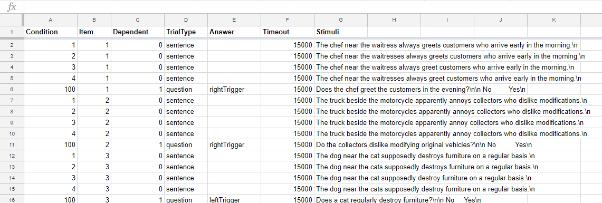
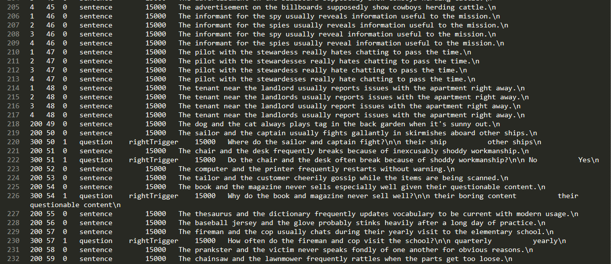
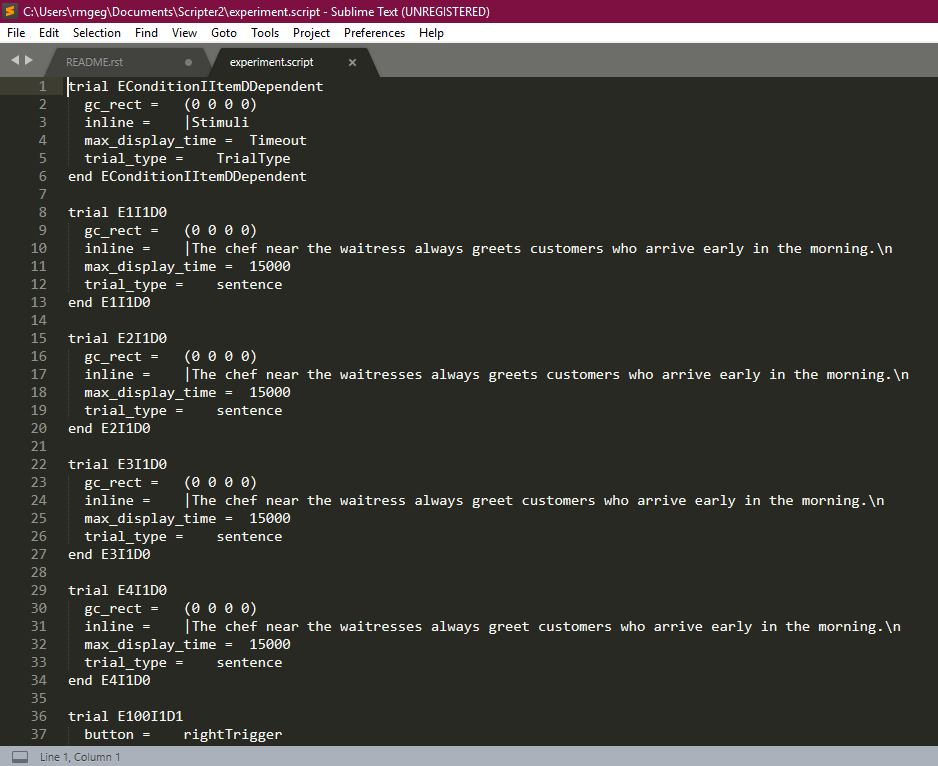

Tutorials
Eyetracking
[Inputs and outputs, from start to finish (perhaps make a flowchart?)]
For reference on how to code and run eyetracking experiments, we refer to chapters 1 and 2 in this manual, which detail how to create an EyeTrack script and how to calibrate the eyetracker. This manual was written by Matthew Abbott while he was an undergraduate RA in Adrian Staub's lab.
Create a region file of your items
step 1: ?have a question
step 2: ?come up with stimuli
step 3: region yon sents
Create a text file of your stimuli, then insert region boundaries using forward slashes. This needs to be done for every line; consider using greps to do this automatically (see here). Some conventions to keep in mind when creating this file:
- For a given critical word or words, the whitespace before it is typically included in the region
- There MUST be a backslash on the final region, before the newline '\n'
- There is no whitespace before the first word.
So for example, a regioning of this sentence:
17 81 Which basketball players is the coach planning to use this season?\n
Might be:
17 81 /Which basketball players/ is the coach/ planning/ to use this season?/\n
Once you have inserted all breaks in the sentences, take the resulting file (suppose it's called 'annotated_sents.txt'), and use the makeRegions.py file to convert it into a CNT file. From the command line:
python Scripts/makeRegions.py 'annotated_sents.txt'
// i forget what the differences between this v. for_robodoc version are -- do you need to use that one, investigate
where you pass the name of the file you just made as a command-line argument to makeRegions.py. This should create a file called 'output.reg.txt' in which every line looks like this:
17 81 6 0 0 24 0 31 0 37 0 46 0 66 0
(COND#) (ITEM NO.) (NO. REGIONS) (X1START) (Y1START) (X2START) (Y2START) (X3START) (Y3START) ....
For single line experiments, only the XSTART bits matter. In this example, for Item 81, Condition 17, the first region begins at (character) 0 and goes up to but does not include character 24; the second region begins at 24, and goes up to but does not include 31; and so on.
THIS IS A GREAT PLACE TO STOP AND DOUBLE CHECK YOUR WORK! Errors in regioning are super easy to make, super difficult to notice later on, and mess up your data like crazy. Take the output.reg.txt file, and inspect it carefully at this point. Check that every item has the number of regions you expect, and check that they all look right. Sample a couple of lines randomly, and confirm by hand that the region limits in output.reg.txt are indeed what they should be. If you have a very predictable manipulation (e.g you know the region limits in condition 2 should always be one character later than in condition 1), then you should also eyeball all the regions and confirm that they fit the template.
You'll need this (double-checked!) file later on.
Create a script file to run your eyetracking experiment
//redo screenshots with brianquest items? no because can't go through whole process
Assuming you have your items in a spreadsheet, creating the script file for eyetracking is simple. You'll need to organize your items as required by Scripter2, all items following this order (the header isn't used, so the naming doesn't matter):
| Condition | Item | Dependent | Trial Type | Answer | Timeout (in ms) | Sentence 1 | (Sentence 2) |
|---|---|---|---|---|---|---|---|
If you aren't doing any display change trials, you should not have a Sentence 2 column.

After you export the sheet as a tab-delimited file, it should look something like this:

In this example, experimental items have conditions 1-4, questions have condition 100, filler items have condition 200, and filler questions have condition 300. Doublecheck that you've coded the conditions properly, and that questions are marked as dependent on their respective item.
From the command line, navigate to the directory that has scripter2 and your items and then run scripter2.

You should specify the name of the input and output files, but can simply skip the specifications for x and y if you're not making any display changes. You definitely do want to generate sequences. The resulting output file should look similar to this:

The trial at the top is a key -- before running the script, you should delete it.In your preferred text editor, copy the following above the items in your script file:
%BeginHeader
Conditions = E1-4
Question = E100
Items 1-48
Fillers
Condition = F200
Questions = F300
Items = 49-119
%EndHeader
set conditions = 5
set experiments = 2
set expConditions = 4 1
set background = 16777215
set foreground = 0
set filterMode = 2
set windowThreshold = 0
set calibration_type = 0
set display_type = LCD
trial_type Message
text_format = 'Monaco' 12 25 20 20 nonantialiased
text_weight = normal non-italic
button = Y
button = X
button = B
button = A
button = toggle
button = leftTrigger
button = rightTrigger
output = nostream
trigger = nogaze
cursor_size = 0
dc_delay = 0
stimulus_delay = 0
revert = 0
highlight_color =197148
end Message
trial_type question
text_format = 'Monaco' 12 48 15 268 nonantialiased
text_weight = normal non-italic
button = leftTrigger
button = rightTrigger
output = nostream
trigger = nogaze
cursor_size = 0
dc_delay = 0
stimulus_delay = 0
revert = 0
highlight_color =1639238
end question
trial_type sentence
text_format = 'Monaco' 11 24 18 315 nonantialiased
text_weight = normal non-italic
button = Y
button = X
button = B
button = A
button = toggle
button = leftTrigger
button = rightTrigger
output = stream
trigger = gaze
cursor_size = 0
dc_delay = 0
stimulus_delay = 0
revert = 0
highlight_color =2163302
end sentence
Edit the header and variables to match your items, as well as any parameters you'd like to change, such as the gaze condition. When running subjects, set trigger equal to 'gaze', but if you would like a version of the experiment which doesn't require the participant to hit a gaze box (for your own testing purposes, or so that you don't collect data from certain subjects, for example), set it equal to 'nogaze'.
Test the script file
Open the script file on the host computer connected to the eyetracking machine. You can test the script by opening it in EyeTrack. You should test each condition in your script. See handy dandy randomizer.py Brian did to create your own lists.
// whoops i forget what the hassle about unix or windows newlines was... reproduce in august
Gather data
Refer to Matt Abbott's guide for how to run participants. //mm probably say more than this
After you've run a participant, save their data file, making sure the filename is 6 characters or less (e.g. EYE002.edf).
Analyze the data
To do anything further with the data, you'll have to convert it from .edf to .asc. On the host computer, open the command line and navigate to the directory with the .edf files in it. edf2asc *.edf creates .asc versions of all the .edf files in that directory.
//if it's not proprietary or something we should put up the
Now we come back to the regioned sentences you made earlier.
//come back to this
- regioning > regionedsents.txt
makeRegions(_forRoboDoc).py regionedsents.txt> output.reg.txt- edit ROBODOC_yourthing_Parameters.txt
Robodoc.py ROBODOC_yourthing_Parameters.txt> CODE00.DA1, blink_summary.csv- SideEye
- R (examples of analysis scripts/bare template)
Phoneme Categorization
- components of a phoneme categorization experiment and how they go together
- analyzing the data (base R script for most analyses)
- do we want to include stuff about how we create stimuli (especially since we're trying to move past artisanal craftsmanship)
Behavioral Lab
PsychoPy2 ...